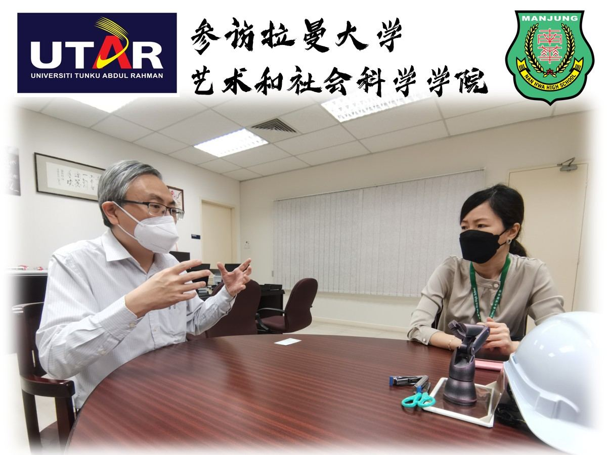
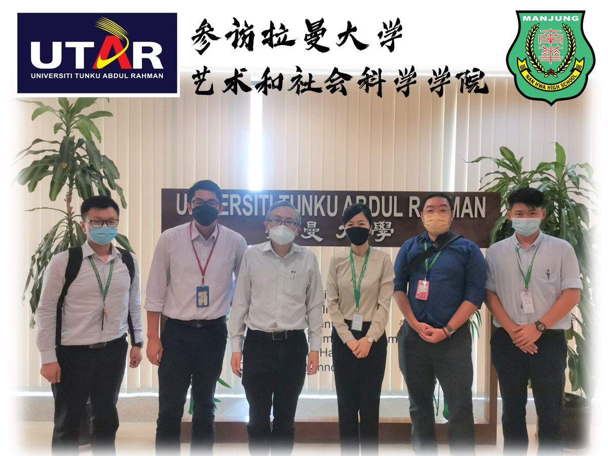

👩🏫参访拉曼大学艺术和社会科学学院🧑💼
👩🏫参访拉曼大学艺术和社会科学学院🧑💼
[UTAR] Visit to The Faculty of Art & Social Science
南华独中为了筹划2022年下学期高中选修课程，并开发多媒体制作相关课程，于20-04-2022（星期三）特此拜访拉曼大学科技及创新组主任·校长兼执行长尤芳达教授博士，进行建教合作相关讨论。
随后借此机会参访“艺术和社会科学学院”各个科系的工作室、画室、咨商辅导室等，并进行交流。
#拉曼大学 #艺术和社会科学 #选修课 #建教 #多媒体制作 #南华独中 #曼绒 #实兆远

